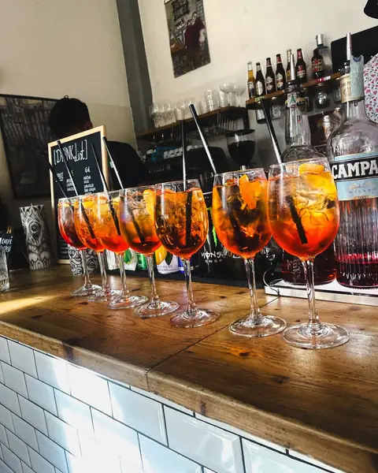
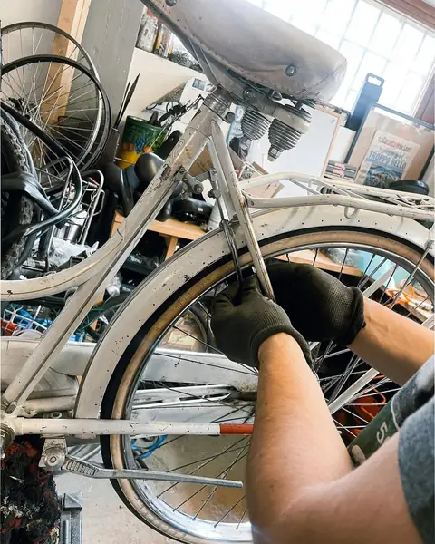
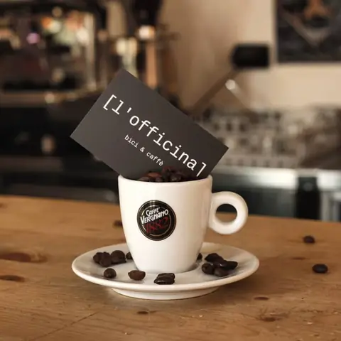
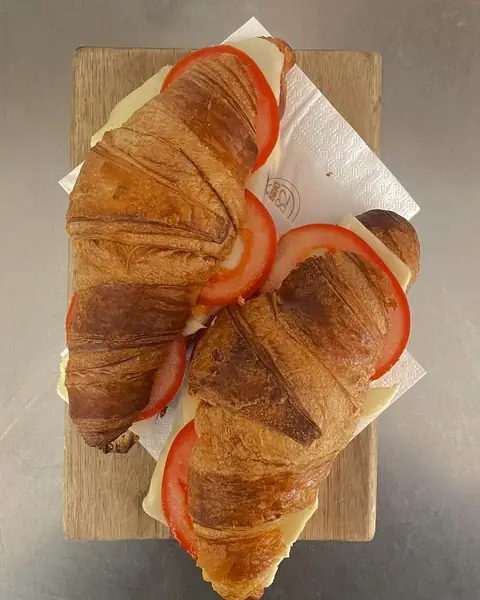
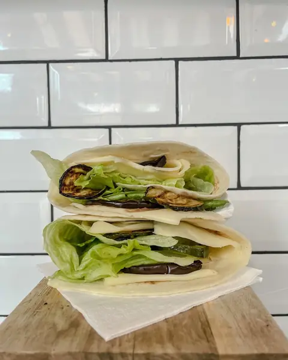
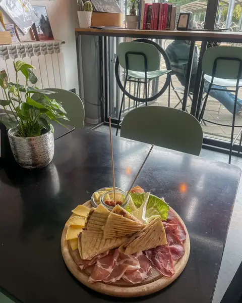
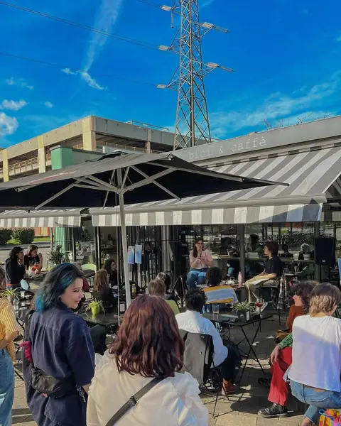
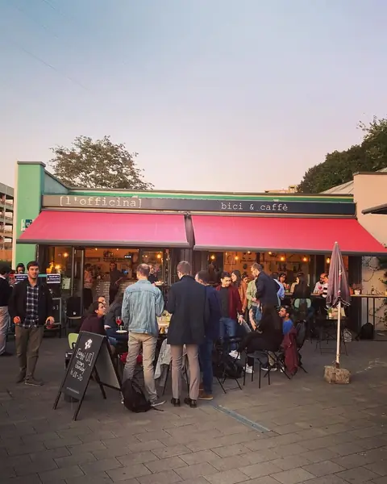

Il bar
Colazione, pranzo, aperitivo
- Colazione cappuccino, cornetti farciti al momento, pasticciotti
- Pranzo tramezzini, toast, piadine, insalatone
- Aperitivo spritz, cocktail, gin, birre e taglieri
Bar · caffetteria · officina bici
Bar e caffetteria davanti al capolinea M3: colazioni, pranzi veloci, aperitivi e spritz. E sul retro una ciclo-officina vera: lasci la bici al mattino, la ritrovi sistemata la sera.
Lun–ven 7–21 · sab 7–19 · dom chiuso
07:00 Il bar apre
Espresso, cappuccino, croissant farciti al momento, bomboloni e pasticciotti. Due minuti al bancone, la metro è lì davanti: il treno lo prendi lo stesso, ma di buon umore.
07:10 L'officina
Ruote, catena, cambio. Sul retro c'è una ciclo-officina vera: banco, cavalletti, attrezzi e il grasso di catena dove serve. Ci dici cosa non va, noi ci mettiamo le mani mentre tu sei al lavoro.
18:30 L'aperitivo
Torni, la bici è pronta. Nel frattempo c'è uno spritz che ti aspetta, un tagliere e due chiacchiere in piazza. Poi si pedala verso casa: più leggeri, e con i freni che frenano.
Un posto, due anime
Davanti il bancone, dalle 7 del mattino alla sera. Dietro il banco da lavoro, dove le bici tornano a girare come si deve.

Il bar

L'officina





La tua bici in officina
Scegli che bici hai e cosa le serve: la mandi su WhatsApp o per e-mail, oppure ci chiami. Poi la porti al mattino, prima della metro.
Dove siamo
Piazza IX Novembre 1989, 20097 San Donato Milanese (MI)
Orari
| Lunedì | – |
|---|---|
| Martedì | – |
| Mercoledì | – |
| Giovedì | – |
| Venerdì | – |
| Sabato | – |
| Domenica | Chiuso |
